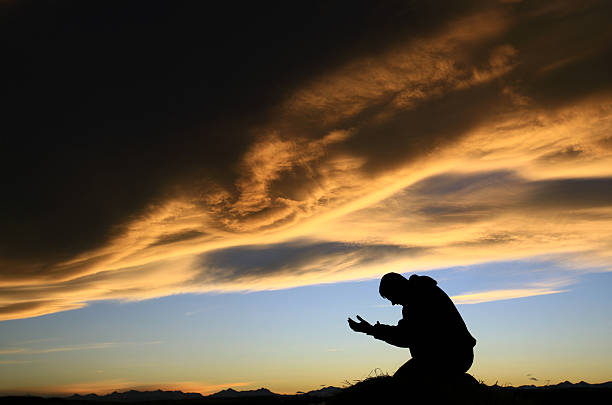

The word GREATNESS can be a natural ability to be better than all other.it can be
a dream achieved. But in a real sense, it is an attitude of the heart that sincerely
desire to live for God and others. [matt.22:36-39]. THis is the greatest law to be
achieved, loving God and other and in the fulfillment of God's purpose over our lives,
His our own greatness.
The true spiritual meaning of jacob's ladder
Jacob's ladder is the DNA of God (Jesus Christ) let down to the earth so that it
could raise up to heaven that jacob might ascend that is communication with God.
Just as human DNA can transfer "Knowledge" and "Information" bidirectional. so do
the Angels ascending and descending on jacob's ladder exchanging communication.
Knowing the will of God for our lives

Not knowing the will of God in a certain matter, we may pray in faith that God will
do this for us if it be his will, abd he will do the things. But where God has
revealed his will on any subject, by promising to do that thing we need not to
be ignorant of it or in doubt concerning it. if his word reveals healing to be
his will, just as surely as salvation is his will, if we fulfill the conditions.
The speaking Alter
God has alter He wants to raise to bless you while satan has alters he want to raise
to curse you. There are alters that speaks against you in your life and also another
alter that speaks for you. The alter you raise to God will speaks on your behalf even
after your generation.The alter of God will work for you but how well they will work for
you will depend on how well you raise them up and how well you place
Judgment is chastening
The scripture says we are judged of the Lord that we may not be condemned with the
world. so there is a condemnation that is coming on the world, but if we are being
judges now, we won't be condemned with the world. When we are judges, we are being
chastened of the Lord. Judgment is chastening. Hebrews 12:5-12. The essence of
chastening is to partake of the lord's
Raising a prayer tower
The demand to raise a prayer tower comes when the need to spiritually contend with other
tower that are influencing a particular territory against the will of God arises. A
tower is raised when people beagn to call upon the name of God on a particular matter.
A tower must be strong and infleunce in the spirit before it can contend. Every territory
has a tower raised by their participate to make sure they are in charge of
The need for guardians and watchmen
When the Guardians and the watchmen in the territory are at sleep, the enemy rejoice
over such territory. it is only on the account of a sleeping guardians and watchman
that evil things penetrate, limitation and stagnation become the order of the day.
These people are earthly functionalities with the ability to discern the happenings
in the heaven and mirror it down
There is no future in the past
Make it a rule of life never to regret and never to look back. Regret is an appallings
waste of energy. You cant't build on it. Forgetting those things which are behind and
reaching for those things which are ahead..I press toward the goal for the price and of
the upward call of God in christ Jesus. Your destiny and call in life is always forward
never backward.
Raising a prayer tower
The demand to raise a prayer tower comes when the need to spiritually contend with other
tower that are influencing a particular territory against the will of God arises. A
tower is raised when people beagn to call upon the name of God on a particular matter.
A tower must be strong and infleunce in the spirit before it can contend. Every territory
has a tower raised by their participate to make sure they are in charge of
Purpose before relationship
God didn't just create man to work, earn degree, marry and die. Many don't know why they
are born on earth, don't care if you are born by accident, everyone has his/her purpose.
Purpose and ambition are different. Ambition is your desire what you want but purpose is
not your desire (Heb.10:7). God can't write failure about you , the day you find yourself
in the book on what is written of you, you begin to walk in the path, your prosperity,
fame and infleunce is your purpose(Luke.4:17). Jesus discovered purpose the day He found
the place where it is written of Him. When you realise you are born for a reason it will
change your out look .when you fimd a place and discover it, you walk in it. (Genesis 2:15)
"And the Lord God took the man, and
Success digestion and capacity tips
The time of the youth is the prime time in anyone's life. Unfortunitely, being young comes
only once in a life time. However, the time of the youth is the period of making choice
that makes indelible marks on one's life and destiny. There is a battle going on in this
world concerning young people and it's all about influencing their choices. About 50% of
the world population is youth and 40% of majority of them are outside God's programs.
Both God and devil are in search of the youth, because they still have their whole
lifetime to serve them either. Image in the case of robbery, cultism, stealing,raping,
ritual killing, prostitution, gambling, internet fraud, yahoo plus, drug pushing,
abortion, e.t.c in which the youth are actively involved.
Treasure in an earthen vessels
To know what is man (psalm 8) is to know God. The angels were asking what is man, not who
is man. (psalm 8:4). it is the question of content not just personality. it is the question
that make up not just who he represnt and actually they don't know who a man is because
they haven't know what is in man. We can also see that they don't know who God is because
they don't know what is in God. The angels may know what God is doing as a mighty one. They
don't know man was fashioned from the dust of the ground but they don't know the potency of
what God want to installed in man so to the angels, man remain a mystery, but when they saw
the first man that unlocked what is called the content (treasure), they came and ministered
to him. He is the second man, the last Adam the man Christ Jesus. He is both God and man.
everything on earth either
laying aside to aligh
As a growing believer, there are things we need to leave behind consciously before our
alignment can be possible with God. You must make a conscious decision to stop malice,
envies and the like before seeking the face or the help of God. Trans-dimensional
alignment cannot be possible if a conscious decision to put an end to a habit, sins and
fault has not be taken. There are some height that we cannot attain in the spirit if
malice, envies and the likes are still important to us. if the Bible instruct us to lay
them aside, that means we can carried them along as we grow. What determine our readiness
to gain entrance in the spirit in our seriousness to lay aside weight. Because we cannot
enter with load and you cannot function with them. you must be light enough in your soul
to penetrate in the spirit. They are stumbling blocks and veils.